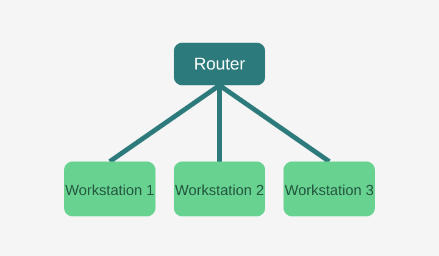

Read WebAIM guidance for accessible links
Study how to write effective alternative text

Decorative images should use an empty alt value, while informative images should describe the meaning users need.
alt